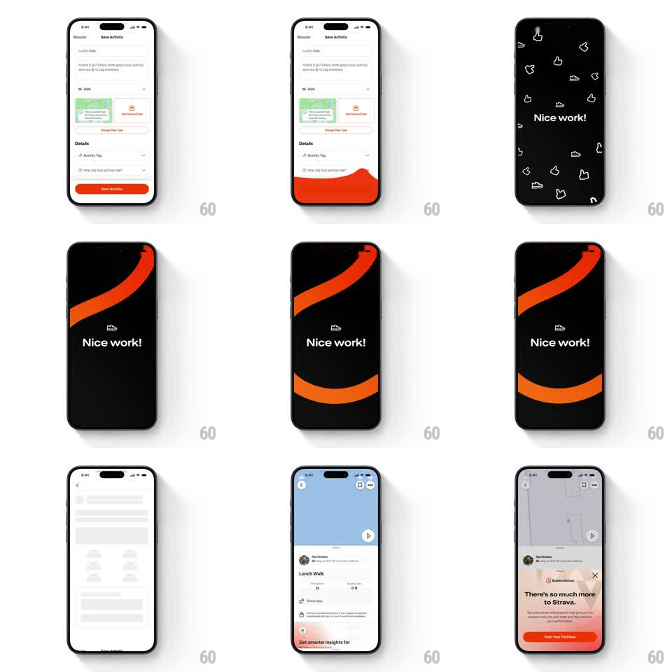

Media
Frame-by-frame

Rebuild this animation 1:1: Strava's save-activity celebration - saving floods the screen with an orange path that morphs into a dark "Nice work!" screen with ribbon swooshes and floating kudos icons.

Rebuild this animation 1:1: Strava's save-activity celebration - saving floods the screen with an orange path that morphs into a dark "Nice work!" screen with ribbon swooshes and floating kudos icons. ## Integration Integration: stack-agnostic spec - springs given as stiffness/damping, timed motions as duration + curve; map every value to your framework and animation library of choice. ## Scene Strava: the white Save Activity form (map thumbnail, details, orange Save Activity button); the celebration screen - black with bold "Nice work!", thick orange swoosh ribbons arcing across, and small floating icons (thumbs-ups, shoes); then the activity detail page with a map and a subscription upsell sheet. ## Motion spec Pattern: orange path flood morphing into the celebration screen. - Tap Save Activity: the button fills and an orange wave erupts from it - a thick curved path that sweeps across the form (stroke draws on, 400ms) while the whole screen tints orange behind it (300ms). - The orange field flips to black as two ribbon swooshes arc in from opposite corners (stroke draw, 500ms each, staggered 150ms, ease-out) - one hot orange, one deeper orange, curving across the screen's midline. - "Nice work!" pops in center-left (scale 0.8 -> 1, spring ~350/15) as the ribbons settle. - Kudos icons (thumbs-up, shoe) float in from the edges (translate + rotate, 450ms, staggered 80ms, 6-8 pieces) and drift gently (translateY +/-6px, 2.5s loops, out of phase). - After ~2.5s the celebration slides up and away (350ms) revealing the activity detail page, whose subscription sheet slides up a beat later (300ms, 150ms delay). ## Calibration - The two ribbons never touch the headline - they frame it above and below. - Icon pieces are outlined white/grey on black - small, flat, and sparse. ## Reduced motion Form crossfades to the celebration screen (300ms), icons static. ## Don't miss - The initial flood originates from the Save button itself - the button is the source of the orange. - The headline is bold white sans, left-of-center, and never animates after its pop.